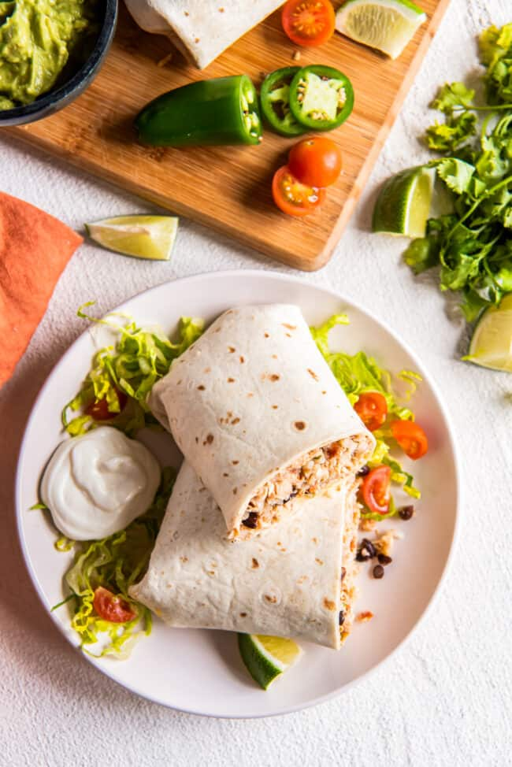

Shredded Chicken Burrito

Description
This shredded chicken burrito recipe is perfect for those busy days when you don't have a lot of time to cook an elaborate meal. Just throw everything
in the crockpot, and set it and forget it! Made with shredded chicken, beans, rice and cheese, this meal will make all types of
eaters in your family happy.
Ingredients
- 2 lbs boneless, skinless chicken breasts
- 1 tsp kosher salt
- 1 tsp chili powder
- 1 tsp cumin
- 1/2 tsp onion powder
- 1/2 tsp garlic powder
- 1/2 tsp dried oregano
- 1/2 tsp ground black pepper
- 1 10oz can diced tomatoes and chilies
- 1 15oz can black beans
- 1 cup cooked rice (white or yellow)
- burrito-sized tortillas
- 1 cup shredded cheese
Steps
- Place the chicken breasts in the crock of a 6-quart slow cooker. Combine the salt, chili powder, cumin, garlic powder, onion powder, oregano, and peppers in a small bowl, then sprinkle the seasoning over the chicken.
- Pour the tomatoes & chilies and beans over the chicken.
- Seal the slow cooker and cook on low for 4-5 hours, or high for 2-3 hours, until the chicken is cooked to an internal temperature of 165 degrees F.
- When the chicken is cooked, remove it to a bowl and shred it, then return it to the slow cooker and stir it into the mixture. Add the cooked rice and stir to combine.
- Divide the filling between the tortillas, sprinkling 1-2 tablespoons of shredded cheese in each before rolling them up and serving them with your favorite burrito toppings.